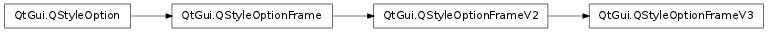

QStyleOptionFrameV3 ¶

Detailed Description ¶
The PySide.QtGui.QStyleOptionFrameV3 class is used to describe the parameters necessary for drawing a frame in Qt 4.1 or above.
PySide.QtGui.QStyleOptionFrameV3 inherits PySide.QtGui.QStyleOptionFrameV2
An instance of the PySide.QtGui.QStyleOptionFrameV3 class has type SO_Frame and version 3. The type is used internally by PySide.QtGui.QStyleOption , its subclasses, and qstyleoption_cast() to determine the type of style option. In general you do not need to worry about this unless you want to create your own PySide.QtGui.QStyleOption subclass and your own styles. The version is used by PySide.QtGui.QStyleOption subclasses to implement extensions without breaking compatibility. If you use qstyleoption_cast() , you normally do not need to check it.
- class PySide.QtGui. QStyleOptionFrameV3 ¶
- class PySide.QtGui. QStyleOptionFrameV3 ( other )
- class PySide.QtGui. QStyleOptionFrameV3 ( other )
- class PySide.QtGui. QStyleOptionFrameV3 ( version )
-
Parameters: - version – PySide.QtCore.int
- other – PySide.QtGui.QStyleOptionFrame
Constructs a PySide.QtGui.QStyleOptionFrameV3 object.
Constructs a PySide.QtGui.QStyleOptionFrameV3 copy of the other style option which can be either of the PySide.QtGui.QStyleOptionFrameV3 or PySide.QtGui.QStyleOptionFrame types.
If the other style option’s version is 1, the new style option’s QStyleOptionFrameV2.FrameFeature value is set to QStyleOptionFrameV2.None . If its version is 2 or lower, QStyleOptionFrameV3.frameShape value is QFrame.NoFrame
See also
version
Constructs a PySide.QtGui.QStyleOptionFrameV3 copy of the other style option.
- PySide.QtGui.QStyleOptionFrameV3. StyleOptionVersion ¶
-
This enum is used to hold information about the version of the style option, and is defined for each PySide.QtGui.QStyleOption subclass.
Constant Description QStyleOptionFrameV3.Version 3 The version is used by PySide.QtGui.QStyleOption subclasses to implement extensions without breaking compatibility. If you use qstyleoption_cast() , you normally do not need to check it.
See also
QStyleOptionFrame.StyleOptionType
- PySide.QtGui.QStyleOptionFrameV3. frameShape ¶
- PySide.QtGui.QStyleOptionFrameV3. unused ¶